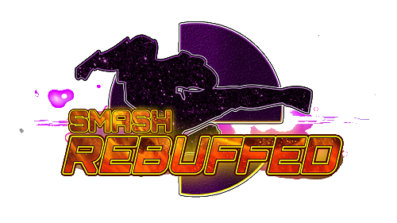

Smash 4 Mods

So, what a mod, huh? This mod is very odd, because people either love the
mod, or hate the mod. So I will be going over not just the mod, but
its community. So, lets start with a basic review of the mod. 4XM
is a mod that, in its basis, hopes to bring the gameplay and
competitiveness of Melee to Smash 4. It does this by bringing the
gameplay back the the old characters, and giving melee-theme fighting
style. They also hope to bring balance to the game with its faster
gameplay and gravity change, along with wavedashing, l-canceling, and
shield dropping. That’s the basis of what 4xM is built off of.
So, what’s the problem with this mod? It’s melee.
“What?” you’re probably asking. Well, allow me to explain.
The game is meant to play like melee, and if you know, melee isn’t the
absolute most balanced game. It has unbalanced hitboxs and an
unbalanced roster. So, it travels over to the mod. Characters are
(while balanced much better than melee) can be odd in matchups and
hitboxes are a little weird. I feel that this isnt a problem. I think
people see this mod as the next PM, and take it seriously at a
competitive level, but in reality, this is just a mod made by people
who has an idea and a dream. This mod, while a little rough around
the edges, isn’t finished and (in my opinion) a huge
achievement and just a fun mod. As a melee Mario main, Mario has been
buffed to be more fun and more balanced, which is very important to
having a fun mod, and I feel 4xM does this great. Seeing all these
characters together playing like a game loved and played by many is
great. Seeing something new like this is interesting and fun. It has
problems, but its fun.
3.5/5
Super Smash Bros All Stars is a mod for Sm4sh, made by the amazingly talented and deticated
Xuman, that hopes to bring the gameplay
and look of past games to Sm4sh, and bring the characters very first appearance back to it’s
original look and feel. They also hope to bring previous stages that weren’t brought back to Sm4sh
back, along with various previous versions. Finally, they hope to update the games single player
to have a more original feel, with old and new events. Now, the mod is pretty fun. Its crazy to see
N64 Smashs’ polygonal look, Melees’ speedy gameplay, along with its great stages that missed out
on its chance, Brawls gritty, almost realistic style and lighting, and the beautiful look of Sm4sh, alomg with
3DS stages. Yet, as of now, the mod is incomplete and sadly held back by that fact.
The main problem I have with this mod as of now is its gameplay for each character. Each characters gameplay is
suppose to represent its original title, and as of now, fails to do that. I wish that I could have a long and
quickpaced combo game like from 64, but I can’t do that, which makes this mod not as fun to play.
I’m unsure if this is possible to change, but its gameplay would be so much more unique if I could z-cancel
and Pivot with 64 characters, but didn’t have as many options, especially for airdodge. For melee, I wish I could
wavedash and l-cancel, but couldn’t dacus or Pivot/Perfect Pivot, plus I can get combo’d easily since they’re
so heavy. For Brawl, I wish it was super floaty, could dacus and footstool, but can’t really string combos.
Finally, I wish newcomers couldn’t do any new tech and play just like vanilla. I know its a lot and may not
even be the main objective, but it makes the game so much more interesting with its gameplay. Of course, the mods
only %30 done, so I can’t wait to see what they bring to the table gameplay wise instead of some fixed characters,
some not worked on, and everyone can do all the tech. I love what they are doing, but as of now needs a lot of work.
2.5/5

Now, I don't want to get too contriversal here, so I am going to put this very delicately. Project Stardust is the most boring,
lazy, and yawnable shit I have ever expirenced in history. Not only is it unoriginal and been done before but 1000x better, but it's
promise of balance is horseshit. It's Sm4sh with PM Turbo, Melee wavedash, and VERY minimal character specific changes. WHY DOES
WAVEDASHING CAUSE LAG?!?! It isn't balanced, it's unfair and unrewarding. Turbo fucks up the game in balance in so many fucking
ways. It's terrible, don't waste your time. It's not balanced, it's boring. Terrible.
1/5 (me being VERY nice)

Smash Rebuffed is a Smash 4 mod made by Meli Satana that “is meant
to be a competitive and fun reimagining of Super Smash Bros. for Wii
U, while keeping the gameplay similar to its original form.” It hopes
to do this by buffing every single character has been boosted to be
better than their vanilla counterpart. They do this with changes to
hitboxes,FAF (First Active Frames), Landing Lag, EndLag, Speed, DMO
(Damage Output), Startup, and more! While the mod is viable, I can’t
help but find some of the options that some of the characters a bit
silly, yet very viable. Now, to move
on to my review. The mod is definitely enjoyable. I had such a blast
playing this with others as they pull off a bunch of cool attacks
and surprising hitboxes and effects. Another thing I really enjoyed
about this mod is that it didn’t change the meta too much. Mods that
keep the original tech while improving upon it and making it better
for everyone is a much prefer for me, so great job! I have so much
fun with perfect pivot now that its much more of a slide and allows
for some technical and spectacular gameplay. The big, yet only big
issue I had with this mod is that it’s balance is based off of what
character has the best and most changes. For example, on the
official tier list, Link is the absolute best, and G&W is at the
absolute bottom. The reason Link is the best is because he’s been
changed to have little landing lag, be much quicker, have more
options with projectiles and up-b setups, and incredible kill power.
G&W is the worst because he has little changes, and only one little
different options that makes him stand out. This could easily be
changed by giving all the characters different options, quicker
changes, and some almost broken options, to keep them in-balance
with the other huge changes. Another small thing that isn’t a
complaint, but more of an observations, is that some characters
completely deviate from their main gameplay. For example, Luigi. He
now has very little throw combos, but trades it for easier kills and
more speed. I don’t like that his gameplay is so different from the
original, but doesn’t fit the character. The reason this is such a
small problem is because it’s a mod, and it is more about changing
the game too, but I much prefer gameplay to stay the same style,
while giving them new options and improving upon the original
options they did have. I still did have fun with this mod, and is
one of my favorite balance updates. If you’re competitive, you’ll
find something you’ll like and it’s options. If you’re a casual,
you’ll have fun watching all of the wacky shenanigans. I like it
lot, and it only has small problems, but one bigger one that I hope
gets changed.
3.5/5

Artful Phoenix is a Sm4sh a mix of two mods with big ideas, Artful Lander and
Phoenix, to make one huge project. In the words of the creator, “The mod is rooted in the gameplay of
equipment-based user created modes for Super Smash Bros. for Wii U such as Smooth Lander
Heavy Gravity and Smooth Lander Anchor Jump, recreating these conditions and building upon
them to create one of the most fast-paced, technical, and balanced gameplay overhaul mods for
Super Smash Bros. for Wii U. With the addition of advanced techniques from past Super Smash
Bros. games, as well as Rivals of Aether and a few entirely new abilities, Artful Phoenix is a
celebration of both the Smash Brothers series and Nintendo as a whole and is unlike any other
Smash 4 experience. All new assets in Artful Phoenix are created from the ground-up by our team.
These original assets include new UI, stages, costumes, and other cosmetics to further improve the
experience.” The mod does this very well, with brand new content, gameplay, and feel. It truly is a
brand new experience. I hate to do this, but I have to relate it to Project M, since they both have the
same feel when it comes to new content. The wavedashing suprisingly doesn’t deviate from the vanilla
gameplay like 4xM since you can still act out of it, but it’s balanced correctly! I also really like how the
characters feel like the vanilla gameplay, and don’t completely change the meta for that character. Finally,
my favorite part, the music is so good! I listen to it everyday because of how good it is. The best part is,
it's all original compositions! Amazing work team. The only problem I really have with the mod is that
some characters aren’t as different as others, making those characters not really have a purpose against
the varied changes. Then again, very few characters don’t have experience worthy changes but a few. I wish
all the cast had new, fun, and balanced changes to allow a new experience. They really dont have anything new or interesting
to keep someone who isnt a technical person and who doesnt really take such unnoticeable features into mind when first playing.
For some reason, I see this with the newer characters mostly. It really isnt a problem, but more of a small issue I could see
new people having. I dont mean to put pressure on the team in any way, but balance and having interesting features that makes
the mod new and exciting is almost the biggest attribute if you want people to stay interested. If they were to take Melee,
add big balance changes and new features to some of the characters, but give others small balance changes, no one will feel
necessary to play them since they know exactly what they do. that problem hits you the hardest specifically because you're a mod
of an existing game. Either way, this is the best well balanced, best UI, and most well rounded meta as of right now.
This is a experience that’s well worth it. The best part is, the mod isn’t even finished! I love everyone in the discord,
they’re so nice. Thanks team, keep improving!
4.5/5

Ch4os Legacy (Ch4os L as it’s referred to in this review for easy sake) is a modpack made by
TheOmniDoctor, which is a modpack to bring back the original mod created by BagleBoy to a new
update, since Ch4os was cancelled by its original creator. They hope to bring the characters to new
broken levels for everyone. Does it do this? Yes! I feel a lot of the characters are broken and fun for
blond stupid moments, and feel like they fit into the Ch4os mod. Even still, it has a huge flaw that
makes this one of the worst mods out there. One character ruins this game, and that’s Meta Knight.
Ironic, isn’t it? Anyways, WHAT THE FUCK? When he does his down taunt, it makes everyone
against him “enter "Flash-Time" for 15 seconds. Although you can just keep spamming this to make it last
as long as you want.” So basically, you have 4x slower witch time for 15 seconds, that you can spam.
Ok, well you can just airdodge, right? NO! Down B instakills and goes through any invisibility. Along
with that, he instakills so much, and all of his moves comes out 10x faster and 10x stronger. You can’t
do anything. You just get killed if your opponents know this, and if they want to win, they go Meta
Knight. I have a friend who comes over and plays smash with me, and I showed him Meta Knight, and
what he can do. Now, he can just do that, and always win. He doesn’t feel compelled to play any other
character because he knows that he can just win. If your game is based on “if your opponent picks one
character, you WILL lose,” its a shit experience. It’s ridiculous and unfair. I was told BY the creator
how to avoid him, “You should play with real people then hope they don't pick MK.” This is sad.
Game design shouldn’t work like this. Everything else is fine, but he ruins the game. Other than that, it
really is fine. Meta Knight is too much, even for an unbalanced mod. The excuse made on the
Gamebanana page is shit, i’m sorry. You know what needs to be done, please.
2/5
Tr4sh is a Smash 4 mod originally made to be just a wild, and untamed mod that made everyone
broken. Now, the mod has sort of evolved into a balanced mod, but making things new and broken.
Broken, to an extent of everyone else is too, so it’s fair but crazy. This is one of the first big modpacks
to appear to be sort of more known in the smash community, or to be more mainstream. It has been
around since the beginning of bigger Smash 4 modding, and has evolved with Smash 4 modding. I'm gonna
get right into it, this mod is amazing. It has had the option to exist for so long, that it knows what to do.
It knows what is fun, broken, and fair in an amazing balance. One of its best features is that its character
changes are phenomenal. Obviously (if you know Tr4sh) Lucina has the most crazy changes with her ability to
literally teleport! It also knows how to control and let the player understand the changes, with lighting on the
character to show what is active, and letting the player learn what they mean through time. It honestly feels like
learning the tools of a new character, and it feels great! Honestly, I couldn’t find anything wrong with
this mod. Sure, it’s being updated to fix things, but it’s also a way to add a lot of new content too, and I
feel like that's what they are mainly for. I love everything this mod has done, and can’t think of anything that
is bad or I dislike of this mod. Its ironic low quality look and changes to names and font to be lower case comic sans
with incorrect spelling is amazing to me(me), and I love all the little nods at everything. I love this so much, please
keep making this as amazing as this is. Also, you fuck up this mod somehow, I will fuck you up. (I’m joking but seriously,
don’t fuck this up ever please <3)
5/5
What's next?